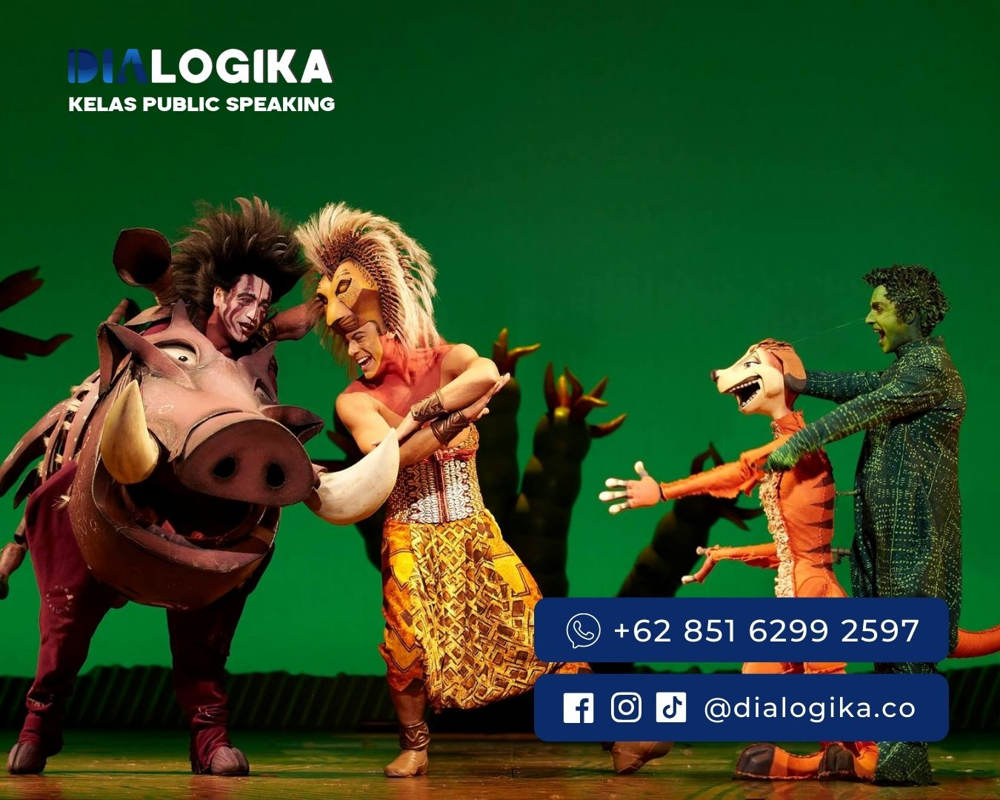
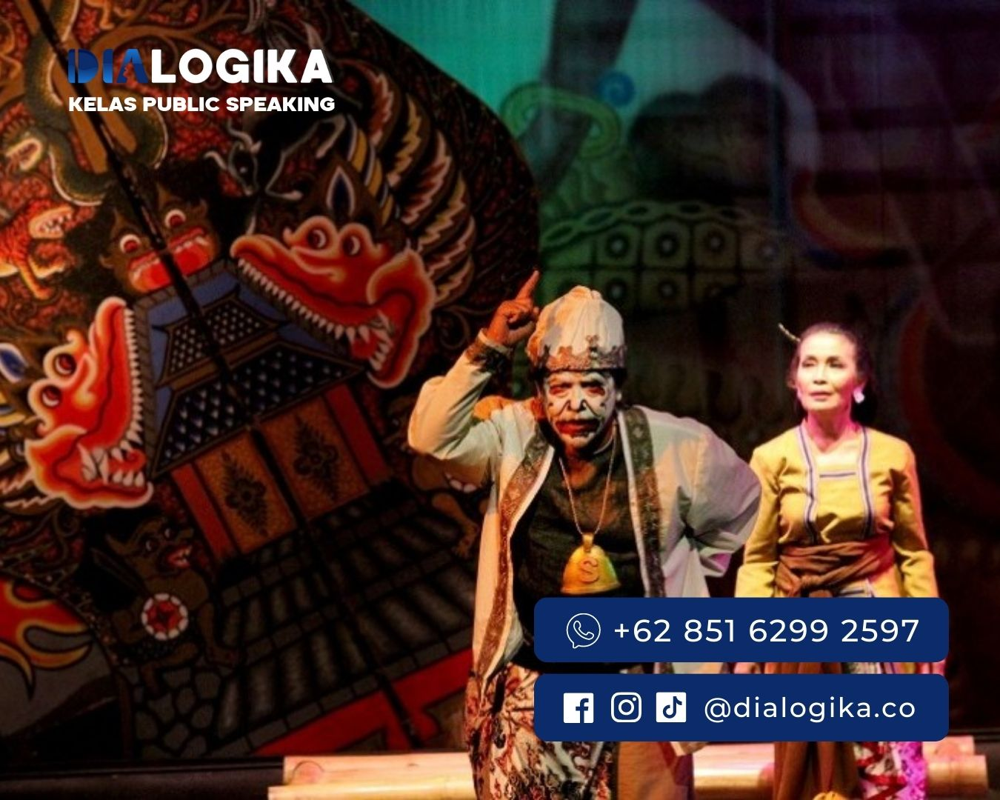

5+ Cara Menjadi Anak Teater yang Harus Kamu Tahu !
Cara Menjadi Anak Teater - Dunia teater telah lama menjadi bagian tak terpisahkan dari budaya manusia. Ini adalah panggung di mana kisah hidup dan imajinasi mengalir menjadi satu, menciptakan sebuah seni yang tiada tanding.
Seiring berjalannya waktu, teater telah berkembang menjadi lebih dari sekadar hiburan, ia menciptakan wadah untuk mengekspresikan emosi, membagikan pandangan, dan membawa cerita-cerita yang menginspirasi dan meresap ke dalam jiwa penontonnya. Bagi mereka yang ingin merasakan euforia di atas panggung dan menjelajahi dunia yang penuh warna ini, menjadi anak teater adalah pilihan yang menarik.
.jpg)
Definisi Teater
Secara definisi, teater adalah bentuk seni pertunjukan di mana sekelompok aktor membawakan cerita di depan penonton, di atas panggung. Namun, lebih dari sekadar sekumpulan kata dan gerakan, teater adalah dunia di mana imajinasi mengalir bebas, dan emosi terkuak tanpa cela. Terdapat berbagai jenis teater, masing-masing memiliki ciri khas dan pendekatan yang berbeda.
Mulai dari teater konvensional hingga teater eksperimental yang mendorong batasan-batasan kreativitas, dunia teater menawarkan banyak pilihan bagi mereka yang ingin terlibat.
“Teater adalah hidup saya dan dari teater saya akan hidup”
Didi Petet
Jenis-jenis Teater
Teater adalah bentuk kesenian yang menghadirkan pertunjukan di atas panggung dengan melibatkan aktor dan aktris. Berbagai jenis teater telah berkembang sepanjang sejarah, dan setiap jenis teater memiliki ciri khas dan daya tariknya sendiri. Berikut adalah penjelasan dari empat jenis teater yang telah disebutkan:
-
1. Teater Konvensional

Teater konvensional adalah jenis teater yang paling umum dan tradisional. Pementasannya dilakukan berdasarkan naskah tertentu yang sudah ditulis sebelumnya. Fokus utama dari teater konvensional adalah dialog dan interaksi antara karakter. Latar, kostum, dan pencahayaan biasanya disesuaikan dengan konteks cerita untuk mendukung pementasan.
Daya Tarik dari teater ini adalah kemurnian dalam penyajian dialog dan emosi karakter membuat penonton mudah terhanyut dalam alur cerita. Contoh dari teater konvensional ini adalah Karya-karya William Shakespeare seperti "Romeo dan Juliet" atau "Hamlet" sering dipentaskan dengan pendekatan konvensional, di mana dialog antar karakter menjadi pusat dari pertunjukan.
-
2. Teater Fusi

Teater fusi merupakan kombinasi dari berbagai elemen seni dalam satu pertunjukan. Teater ini menggabungkan berbagai unsur seperti tarian, musik, dan seni visual, sehingga menciptakan harmoni antar unsur tersebut dalam satu pementasan.
Daya Tarik dari terater ini adalah dari keberagaman elemen yang ditampilkan memberikan pengalaman multisensorik bagi penonton, membuat pertunjukan menjadi lebih dinamis dan menarik.
Contoh dari salah satu pertunjukan yang dikenal adalah "Blue Man Group", di mana musik, komedi, dan efek visual digabungkan untuk menciptakan sebuah pertunjukan yang unik dan menarik.
-
3. Teater Musikal

Teater musikal adalah pertunjukan yang menggabungkan musik, lagu, tarian, dan dialog dalam satu kesatuan cerita. Karakteristik teater ini adalah lagu dan tarian menjadi bagian integral dari alur cerita, dan seringkali mampu menyampaikan emosi dan pesan dengan cara yang berbeda dari dialog.
Daya Tariknya adalah alunan musik dan tarian yang memesona mampu mengajak penonton dalam perjalanan emosional, seringkali meninggalkan kesan mendalam.
Contoh: Ada banyak teater musikal terkenal, tetapi beberapa di antaranya yang paling populer adalah "Les Misérables", "The Phantom of the Opera", dan "The Lion King". Pertunjukan-pertunjukan ini menggabungkan dialog, lagu, dan tarian untuk menceritakan kisah yang mendalam.
-
4. Teater Eksperimental

Sebagai bentuk teater yang tidak terikat konvensi, teater eksperimental mengeksplorasi bentuk, teknik, dan konten yang baru dan inovatif. Karakteristiknya adalah bisa melibatkan pementasan non-linear, teknologi baru, interaksi dengan penonton, atau pendekatan artistik lain yang tidak konvensional.
Daya Tariknya adalah dengan menciptakan pengalaman yang unik dan berbeda, teater eksperimental menantang penonton untuk melihat dan merasakan sesuatu dari perspektif yang berbeda.
Contoh: teater yang dibentuk oleh Nano Riantiarno, kelompok ini dikenal karena pementasan-pementasannya yang berani. "Semar Gugat" adalah salah satu pertunjukan kontroversial mereka yang mengeksplorasi peran tradisi dalam konteks sosial-politik modern Indonesia.
Semua jenis teater di atas memiliki nilai seni dan estetika tersendiri. Masing-masing mampu menyampaikan cerita dan emosi dengan cara yang berbeda, menawarkan pengalaman yang beragam bagi penonton.
Bakat yang Diperlukan: Lebih dari Hanya Karakter
Menjadi anak teater bukanlah tugas yang mudah. Anak teater atau para pelaku seni teater memerlukan sejumlah bakat dan keterampilan khusus untuk dapat menampilkan pertunjukan yang menarik dan berkualitas.
Beberapa bakat dan keterampilan ini juga berkaitan erat dengan public speaking. Berikut adalah beberapa bakat dan keterampilan yang diperlukan dan kaitannya:
-
1. Public Speaking
Kemampuan untuk berbicara di depan publik dengan jelas, meyakinkan, dan menarik. Kaitan dengan teater adalah adalah seorang aktor seringkali harus berbicara di depan banyak orang. Mereka perlu menguasai teknik berbicara agar dapat menyampaikan dialog dengan efektif.
-
2. Ekspresi
Kemampuan untuk menunjukkan emosi, perasaan, atau pikiran melalui wajah, tubuh, atau suara. Kaitan dengan teater adalah adalah Ekspresi adalah salah satu elemen kunci dalam akting. Seorang aktor harus mampu menunjukkan berbagai ekspresi sesuai dengan karakter dan situasi dalam naskah.
-
3. Intonasi
Variasi nada suara saat berbicara, yang digunakan untuk menekankan, mengajukan pertanyaan, atau menunjukkan emosi. Kaitan dengan teater adalah intonasi yang tepat dapat membuat dialog menjadi hidup dan lebih bermakna. Hal ini penting terutama dalam adegan-adegan yang emosional atau penuh tekanan.
-
4. Artikulasi
Kemampuan untuk mengucapkan kata-kata dengan jelas dan tepat.Kaitan dengan teater adalah untuk memastikan penonton mengerti dialog, aktor harus bisa berbicara dengan artikulasi yang baik. Ini juga berkaitan erat dengan public speaking.
-
5. Kemampuan Mendengar
Kemampuan untuk mendengar dan merespons informasi yang diterima. Kaitan dengan teater adalah dalam pementasan, aktor harus responsif terhadap rekan-rekan mereka di panggung. Mendengar dengan cermat memungkinkan mereka untuk merespons dengan tepat.
-
6. Kehadiran Panggung (Stage Presence)
Kemampuan seseorang untuk menarik perhatian dan mempertahankan koneksi dengan penonton saat berada di panggung. Kaitan dengan teater adalah seorang aktor dengan kehadiran panggung yang kuat akan lebih mampu memikat penonton dan membuat mereka terlibat dalam pertunjukan.
-
7. Improvisasi
Kemampuan untuk mencipta atau beradaptasi spontan tanpa persiapan sebelumnya. Kaitan dengan teater adalah terkadang, kesalahan atau perubahan mendadak bisa terjadi saat pementasan. Kemampuan untuk berimprovisasi memungkinkan aktor untuk tetap melanjutkan pertunjukan tanpa mengganggu alur cerita.
Semua keterampilan dan bakat di atas tidak hanya bermanfaat untuk teater tetapi juga dalam berbagai aspek kehidupan, termasuk berkomunikasi di tempat kerja, presentasi, atau interaksi sosial sehari-hari.
Dengan latihan dan dedikasi, seseorang dapat mengembangkan dan mempertajam bakat-bakat ini. Lalu jika sudah mengetahui bakat yang harus dimiliki seorang anak teater, langkah apa yang harus dilakukan oleh seorang pemula untuk menjadi anak teater?
Tips Bagi Pemula: Menyusun Langkah Awal
Bagi pemula yang ingin merambah dunia teater, terdapat beberapa tips yang dapat diikuti:
-

1. Pelajari Dasar-dasar Akting
Mulailah dengan memahami dasar-dasar akting, termasuk cara mengungkapkan emosi, memahami karakter, dan berinteraksi dengan sesama aktor.
.jpg)
2. Ambil Pelajaran Akting
Mengikuti pelajaran akting merupakan langkah penting.Mendaftar di sekolah atau kelas akting yang terpercaya akan memberikan sebuah panduan dan bimbingan yang dibutuhkan.
.jpg)
3. Berkomunikasi dengan Sesama Aktor
Interaksi dan kerja sama dengan sesama aktor adalah bagian integral dari teater. Pelajari bagaimana beradaptasi dan bekerja dalam sebuah tim.
.jpg)
4. Pengalaman Panggung
Mencoba tampil di panggung kecil atau dalam produksi teater sekolah adalah cara bagusuntuk mendapatkan pengalaman awal dan membangun kepercayaan diri.
.jpg)
5. Menjalin Koneksi
Seperti pekerjaan lainnya, dunia teater juga membutuhkan jaringan. Jalin hubungan dengan orang-orang di industri ini, termasuk sesama aktor, sutradara, dan produser.
.jpg)
6. Pertimbangkan Pelatih Akting
Bagaimana cara memilih pelatih akting yang tepat adalah keputusan yang penting.Pilihlah pelatih yang memiliki pengalaman dan pemahaman mendalam tentang seni akting.
Teater Yang Menginspirasi: Bunga Penutup Abad
"Bunga Penutup Abad" karya Mira W. yang kemudian diadaptasi menjadi film dan drama panggung. Cerita ini menggambarkan perjalanan emosional seorang wanita bernama Rahayu di tengah pergolakan politik dan sosial Indonesia pada akhir abad ke-19 hingga awal abad ke-20 (masa transisi dari zaman kolonial ke zaman modern). Untuk mengetahui alur cerita, inilah ringkasan cerita dari Bunga Penutup Abad:
Rahayu tumbuh dalam lingkungan yang terjebak dalam adat dan norma-norma tradisional. Namun, ketika ia bertemu dengan seorang fotografer Belanda bernama Willem, hidupnya mengalami perubahan drastis.
Kedua karakter ini memiliki pandangan dunia yang berbeda, tetapi mereka terlibat dalam hubungan yang penuh dengan pertentangan dan keterlibatan emosional.
Pertempuran politik dan sosial yang terjadi pada saat itu juga mempengaruhi kehidupan Rahayu. Gerakan perlawanan terhadap penjajahan Belanda dan perkembangan ide-ide baru mempengaruhi pandangannya terhadap kehidupan dan kebebasan. Rahayu secara perlahan mulai merangkul pemikiran modern dan menentang norma-norma tradisional yang mengikatnya.
Selama perjalanan hidupnya, Rahayu mengalami pertentangan batin antara tuntutan budaya dan hasrat pribadi, serta antara cintanya kepada Willem dan perjuangannya untuk mengambil kendali atas hidupnya sendiri. Dia mencoba mengatasi konflik ini sambil menjalani perjalanan yang menantang menuju kemandirian dan penerimaan diri.
"Bunga Penutup Abad" mengangkat tema-tema seperti identitas, perubahan sosial, perjuangan perempuan dalam konteks masyarakat yang patriarkal, serta interaksi budaya dan politik pada masa kolonial. Cerita ini memberikan inspirasi tentang ketabahan, pemberontakan terhadap keterbatasan, dan pentingnya menjalani hidup sesuai dengan keyakinan dan nilai-nilai pribadi.
Melalui perjalanan karakter utamanya, cerita ini mengajarkan kita untuk menghadapi perubahan dengan kepala tegak, mengejar impian, dan menghormati hak-hak dan identitas kita sendiri serta orang lain.
Ayo lakukan perubahan! Tingkatkan kemampuan mu Sekarang Juga
Join Our Classes, Mentoring Langsung Bersama Mentor Dialogika, Konsultasikan Kebutuhan Anda Sekarang